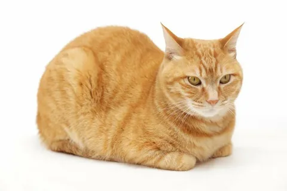

Dogs are domesticated mammals, not natural wild animals. They were originally bred from wolves. They have been bred by humans for a long time, and were the first animals ever to be domesticated.
Cats

Cats are small, carnivorous mammals that are often kept as pets. They are known for their agility, playfulness, and ability to hunt vermin.
=======
Animal
Pets
List of Pets
Dog
Cat
Dogs
Dogs are domesticated mammals, not natural wild animals. They were originally bred from wolves. They have been bred by humans for a long time, and were the first animals ever to be domesticated.
Cats
Cats are small, carnivorous mammals that are often kept as pets. They are known for their agility, playfulness, and ability to hunt vermin.